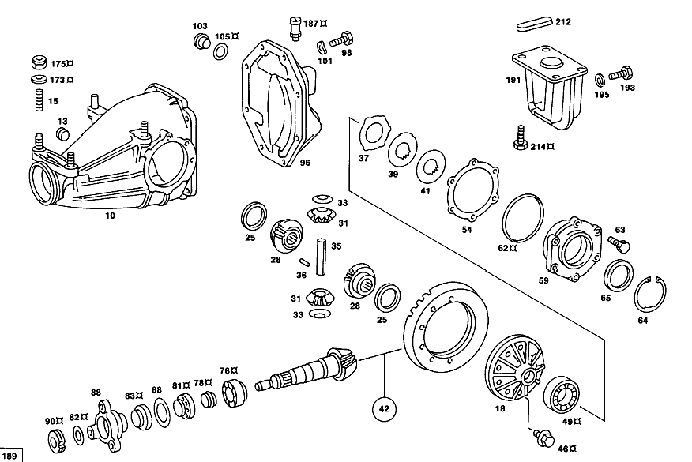

| № | Артикул | Название | Кол. | Примечание | Ограничение |
|---|---|---|---|---|---|
| 10 | A 115 350 14 20 | - КАРТЕР МОСТА | 1 | [069] ЦЕНТР.ЭЛЕМ.ЗАДН.МОСТА С БОК.КРЫШКАМИ ОПОР [033] UP TO CHASSIS 024 155152 120 018590 [402] БОЛЬШЕ НЕ ПОСТАВЛЯЕТСЯ | |
| 10 | A 123 350 22 20 | - КАРТЕР МОСТА | 1 | [402] БОЛЬШЕ НЕ ПОСТАВЛЯЕТСЯ [070] ЦЕНТР.ЭЛЕМ.ЗАДН.МОСТА БЕЗ БОК.КРЫШЕК ОПОР [036] FROM CHASSIS 024 155153 120 018591 | |
| 13 | A 186 997 00 32 | - ЗАГЛУШКА РЕЗЬБОВАЯ | 1 | M24X1,5 | |
| 15 | A 115 351 02 70 | - Шпилька | 4 | ||
| 18 | A 116 350 45 23 | - ДИФФЕРЕНЦИАЛ | 1 | БЕЗ КОМПЛЕКТА ШЕСТЕРЕН [417] БОЛЬШЕ НЕ ПОСТАВЛЯЕТСЯ, ЗАКАЗЫВАТЬ КОМПЛЕКТ ПОСТАВКИ [069] ЦЕНТР.ЭЛЕМ.ЗАДН.МОСТА С БОК.КРЫШКАМИ ОПОР [033] UP TO CHASSIS 024 155152 120 018590 | |
| 18 | A 116 350 57 23 | - ДИФФЕРЕНЦИАЛ | - | ||
| 18 | A 124 350 63 23 | - Дифференциал | 1 | БЕЗ КОМПЛЕКТА ШЕСТЕРЕН [402] БОЛЬШЕ НЕ ПОСТАВЛЯЕТСЯ [070] ЦЕНТР.ЭЛЕМ.ЗАДН.МОСТА БЕЗ БОК.КРЫШЕК ОПОР [036] FROM CHASSIS 024 155153 120 018591 | |
| 25 | A 115 353 15 62 | - УПОРНАЯ ШАЙБА | 2 | ПО НЕОБХОДИМОСТИ 1.0 MM; 1.00 MM [402] БОЛЬШЕ НЕ ПОСТАВЛЯЕТСЯ | |
| 25 | A 115 353 14 62 | - УПОРНАЯ ШАЙБА | 2 | ПО НЕОБХОДИМОСТИ 1.1 MM; 1.10 MM [402] БОЛЬШЕ НЕ ПОСТАВЛЯЕТСЯ | |
| 25 | A 115 353 13 62 | - УПОРНАЯ ШАЙБА | 2 | ПО НЕОБХОДИМОСТИ 1.2 MM; 1.20 MM [402] БОЛЬШЕ НЕ ПОСТАВЛЯЕТСЯ | |
| 25 | A 115 353 12 62 | - Упорная шайба | 2 | ПО НЕОБХОДИМОСТИ 1.25 MM; 1.25 MM | |
| 25 | A 115 353 11 62 | - Упорная шайба | 2 | ПО НЕОБХОДИМОСТИ 1.3 MM; 1.30 MM | |
| 25 | A 115 353 16 62 | - Упорная шайба | 2 | ПО НЕОБХОДИМОСТИ 1.35 MM; 1.35 MM | |
| 25 | A 115 353 10 62 | - Упорная шайба | 2 | ПО НЕОБХОДИМОСТИ 1.4 MM; 1.40 MM | |
| 25 | A 115 353 17 62 | - Упорная шайба | 2 | ПО НЕОБХОДИМОСТИ 1.45 MM; 1.45 MM | |
| 25 | A 115 353 09 62 | - Упорная шайба | 2 | ПО НЕОБХОДИМОСТИ 1.5mm; 1.50 MM | |
| 25 | A 115 353 18 62 | - Упорная шайба | 2 | ПО НЕОБХОДИМОСТИ 1.55 MM; 1.55 MM | |
| 25 | A 115 353 08 62 | - Упорная шайба | 2 | ПО НЕОБХОДИМОСТИ 1.6mm; 1.60 MM | |
| 25 | A 115 353 19 62 | - Упорная шайба | 2 | ПО НЕОБХОДИМОСТИ 1.65 MM; 1.65 MM | |
| 25 | A 115 353 07 62 | - ШАЙБА УПОРНАЯ | 2 | ПО НЕОБХОДИМОСТИ 1.7 MM; 1.70 MM [402] БОЛЬШЕ НЕ ПОСТАВЛЯЕТСЯ | |
| 28 | A 115 353 03 15 | - ШЕСТЕРНЯ ПОЛУОСИ | 2 | ||
| 31 | A 107 353 00 14 | - Сателлит дифференциала | 2 | ||
| 33 | A 115 353 03 24 | - Упорное кольцо | 2 | [021] FROM REAR AXLE: 020 137831 032,033 043500 | |
| 35 | A 124 353 07 21 | - Палец | 1 | ||
| 36 | N 001481 006007 | - Распорный штифт | 1 | [402] БОЛЬШЕ НЕ ПОСТАВЛЯЕТСЯ | |
| 42 | A 123 350 14 39 | - Комплект колес | 1 | 1:3.07 | |
| 46 | A 123 990 30 01 | - БОЛТ | - | ||
| 46 | A 202 990 28 01 | - БОЛТ | 10 | ТАРЕЛЬЧ. ШЕСТЕРНЯ НА КОРПУСЕ ДИФФЕРЕНЦИАЛА | |
| 49 | A 000 980 82 02 | - Кон. роликоподшипник | 2 | ОПОРА ТАРЕЛЬЧ. ШЕСТЕРНИ [069] ЦЕНТР.ЭЛЕМ.ЗАДН.МОСТА С БОК.КРЫШКАМИ ОПОР [033] UP TO CHASSIS 024 155152 120 018590 | |
| 49 | A 001 980 21 02 | - Конический подшипник | 2 | ОПОРА ТАРЕЛЬЧ. ШЕСТЕРНИ [402] БОЛЬШЕ НЕ ПОСТАВЛЯЕТСЯ [070] ЦЕНТР.ЭЛЕМ.ЗАДН.МОСТА БЕЗ БОК.КРЫШЕК ОПОР [036] FROM CHASSIS 024 155153 120 018591 | |
| 54 | A 115 353 08 54 | - РАСПОРНАЯ ШАЙБА | 2 | ПО НЕОБХОДИМОСТИ 0.6 MM | |
| 54 | A 115 353 06 54 | - РАСПОРНАЯ ШАЙБА | 2 | ПО НЕОБХОДИМОСТИ 0.7 MM | |
| 54 | A 115 353 04 54 | - РАСПОРНАЯ ШАЙБА | 2 | ПО НЕОБХОДИМОСТИ 0.8mm | |
| 54 | A 115 353 02 54 | - РАСПОРНАЯ ШАЙБА | 2 | ПО НЕОБХОДИМОСТИ 0.9 MM | |
| 54 | A 115 353 00 54 | - Компенсационная шайба | 2 | ПО НЕОБХОДИМОСТИ 1.0 MM [069] ЦЕНТР.ЭЛЕМ.ЗАДН.МОСТА С БОК.КРЫШКАМИ ОПОР [033] UP TO CHASSIS 024 155152 120 018590 | |
| 54 | A 115 353 98 52 | - РАСПОРНАЯ ШАЙБА | 2 | ПО НЕОБХОДИМОСТИ 1.1 MM [402] БОЛЬШЕ НЕ ПОСТАВЛЯЕТСЯ [069] ЦЕНТР.ЭЛЕМ.ЗАДН.МОСТА С БОК.КРЫШКАМИ ОПОР [033] UP TO CHASSIS 024 155152 120 018590 | |
| 54 | A 115 353 96 52 | - Компенсационная шайба | 2 | ПО НЕОБХОДИМОСТИ 1.2 MM [069] ЦЕНТР.ЭЛЕМ.ЗАДН.МОСТА С БОК.КРЫШКАМИ ОПОР [033] UP TO CHASSIS 024 155152 120 018590 | |
| 54 | A 115 353 09 54 | - Компенсационная шайба | 2 | ПО НЕОБХОДИМОСТИ 1.3 MM [069] ЦЕНТР.ЭЛЕМ.ЗАДН.МОСТА С БОК.КРЫШКАМИ ОПОР [033] UP TO CHASSIS 024 155152 120 018590 | |
| 54 | A 115 353 11 54 | - Компенсационная шайба | 2 | ПО НЕОБХОДИМОСТИ 1.4 MM [069] ЦЕНТР.ЭЛЕМ.ЗАДН.МОСТА С БОК.КРЫШКАМИ ОПОР [033] UP TO CHASSIS 024 155152 120 018590 | |
| 54 | A 115 353 13 54 | - РАСПОРНАЯ ШАЙБА | 2 | ПО НЕОБХОДИМОСТИ 1.5mm [069] ЦЕНТР.ЭЛЕМ.ЗАДН.МОСТА С БОК.КРЫШКАМИ ОПОР [033] UP TO CHASSIS 024 155152 120 018590 | |
| 54 | A 115 353 35 54 | - РАСПОРНАЯ ШАЙБА | 2 | ПО НЕОБХОДИМОСТИ 1.6mm [069] ЦЕНТР.ЭЛЕМ.ЗАДН.МОСТА С БОК.КРЫШКАМИ ОПОР [033] UP TO CHASSIS 024 155152 120 018590 | |
| 54 | A 115 353 37 54 | - Компенсационная шайба | 2 | ПО НЕОБХОДИМОСТИ 1.7 MM [069] ЦЕНТР.ЭЛЕМ.ЗАДН.МОСТА С БОК.КРЫШКАМИ ОПОР [033] UP TO CHASSIS 024 155152 120 018590 | |
| 54 | A 115 353 39 54 | - РАСПОРНАЯ ШАЙБА | 2 | ПО НЕОБХОДИМОСТИ 1.8mm [069] ЦЕНТР.ЭЛЕМ.ЗАДН.МОСТА С БОК.КРЫШКАМИ ОПОР [033] UP TO CHASSIS 024 155152 120 018590 | |
| 54 | A 115 353 41 54 | - Компенсационная шайба | 2 | ПО НЕОБХОДИМОСТИ 1.9 MM [069] ЦЕНТР.ЭЛЕМ.ЗАДН.МОСТА С БОК.КРЫШКАМИ ОПОР [033] UP TO CHASSIS 024 155152 120 018590 | |
| 59 | A 123 353 00 06 | - Крышка подшипника | 2 | [069] ЦЕНТР.ЭЛЕМ.ЗАДН.МОСТА С БОК.КРЫШКАМИ ОПОР [033] UP TO CHASSIS 024 155152 120 018590 | |
| 62 | A 003 997 24 48 | - Уплотнительное кольцо | 2 | [069] ЦЕНТР.ЭЛЕМ.ЗАДН.МОСТА С БОК.КРЫШКАМИ ОПОР [033] UP TO CHASSIS 024 155152 120 018590 | |
| 63 | N 000933 008114 | - Винт | - | M8X22\-8.8 | |
| 63 | N 304017 008021 | - Винт с 6-гранной головкой | 12 | M8X20 | |
| 64 | A 123 994 01 41 | - Стопорное кольцо | 2 | ПО НЕОБХОДИМОСТИ 3.6 MM; 3.60 MM [070] ЦЕНТР.ЭЛЕМ.ЗАДН.МОСТА БЕЗ БОК.КРЫШЕК ОПОР [036] FROM CHASSIS 024 155153 120 018591 | |
| 64 | A 123 994 02 41 | - Стопорное кольцо | 2 | ПО НЕОБХОДИМОСТИ 3.7 MM; 3.70 MM [070] ЦЕНТР.ЭЛЕМ.ЗАДН.МОСТА БЕЗ БОК.КРЫШЕК ОПОР [036] FROM CHASSIS 024 155153 120 018591 | |
| 64 | A 123 994 03 41 | - Стопорное кольцо | 2 | ПО НЕОБХОДИМОСТИ 3.8 MM; 3.80 MM [070] ЦЕНТР.ЭЛЕМ.ЗАДН.МОСТА БЕЗ БОК.КРЫШЕК ОПОР [036] FROM CHASSIS 024 155153 120 018591 | |
| 64 | A 123 994 04 41 | - предохранитель | 2 | ПО НЕОБХОДИМОСТИ 3.85 MM; 3.85 MM [402] БОЛЬШЕ НЕ ПОСТАВЛЯЕТСЯ [070] ЦЕНТР.ЭЛЕМ.ЗАДН.МОСТА БЕЗ БОК.КРЫШЕК ОПОР [036] FROM CHASSIS 024 155153 120 018591 | |
| 64 | A 123 994 05 41 | - Стопорное кольцо | 2 | ПО НЕОБХОДИМОСТИ 3.9 MM; 3.90 MM [402] БОЛЬШЕ НЕ ПОСТАВЛЯЕТСЯ [070] ЦЕНТР.ЭЛЕМ.ЗАДН.МОСТА БЕЗ БОК.КРЫШЕК ОПОР [036] FROM CHASSIS 024 155153 120 018591 | |
| 64 | A 123 994 06 41 | - предохранитель | 2 | ПО НЕОБХОДИМОСТИ 3.95 MM; 3.95 MM [070] ЦЕНТР.ЭЛЕМ.ЗАДН.МОСТА БЕЗ БОК.КРЫШЕК ОПОР [036] FROM CHASSIS 024 155153 120 018591 | |
| 64 | A 123 994 07 41 | - Стопорное кольцо | 2 | ПО НЕОБХОДИМОСТИ 4.0 MM; 4.00 MM [070] ЦЕНТР.ЭЛЕМ.ЗАДН.МОСТА БЕЗ БОК.КРЫШЕК ОПОР [036] FROM CHASSIS 024 155153 120 018591 | |
| 64 | A 123 994 08 41 | - предохранитель | 2 | ПО НЕОБХОДИМОСТИ 4.05 MM; 4.05 MM [402] БОЛЬШЕ НЕ ПОСТАВЛЯЕТСЯ [070] ЦЕНТР.ЭЛЕМ.ЗАДН.МОСТА БЕЗ БОК.КРЫШЕК ОПОР [036] FROM CHASSIS 024 155153 120 018591 | |
| 64 | A 123 994 09 41 | - Стопорное кольцо | 2 | ПО НЕОБХОДИМОСТИ 4.1 MM; 4.10 MM [402] БОЛЬШЕ НЕ ПОСТАВЛЯЕТСЯ [070] ЦЕНТР.ЭЛЕМ.ЗАДН.МОСТА БЕЗ БОК.КРЫШЕК ОПОР [036] FROM CHASSIS 024 155153 120 018591 | |
| 64 | A 123 994 10 41 | - предохранитель | 2 | ПО НЕОБХОДИМОСТИ 4.15 MM; 4.15 MM [070] ЦЕНТР.ЭЛЕМ.ЗАДН.МОСТА БЕЗ БОК.КРЫШЕК ОПОР [036] FROM CHASSIS 024 155153 120 018591 | |
| 64 | A 123 994 11 41 | - Стопорное кольцо | 2 | ПО НЕОБХОДИМОСТИ 4.2 MM; 4.20 MM [070] ЦЕНТР.ЭЛЕМ.ЗАДН.МОСТА БЕЗ БОК.КРЫШЕК ОПОР [036] FROM CHASSIS 024 155153 120 018591 | |
| 64 | A 123 994 12 41 | - Стопорное кольцо | 2 | ПО НЕОБХОДИМОСТИ 4.3 MM; 4.30 MM [070] ЦЕНТР.ЭЛЕМ.ЗАДН.МОСТА БЕЗ БОК.КРЫШЕК ОПОР [036] FROM CHASSIS 024 155153 120 018591 | |
| 64 | A 123 994 13 41 | - Стопорное кольцо | 2 | ПО НЕОБХОДИМОСТИ 4.4 MM; 4.40 MM [070] ЦЕНТР.ЭЛЕМ.ЗАДН.МОСТА БЕЗ БОК.КРЫШЕК ОПОР [036] FROM CHASSIS 024 155153 120 018591 | |
| 65 | A 112 353 14 52 | - Компенсационная шайба | 1 | ПО НЕОБХОДИМОСТИ 1.5mm | |
| 65 | A 112 353 16 52 | - РАСПОРНАЯ ШАЙБА | 1 | ПО НЕОБХОДИМОСТИ 1.6mm | |
| 65 | A 112 353 18 52 | - РАСПОРНАЯ ШАЙБА | 1 | ПО НЕОБХОДИМОСТИ 1.7 MM [402] БОЛЬШЕ НЕ ПОСТАВЛЯЕТСЯ | |
| 65 | A 112 353 20 52 | - Компенсационная шайба | 1 | ПО НЕОБХОДИМОСТИ 1.8mm | |
| 76 | A 000 980 10 02 | - Конический подшипник | 1 | ПОДШИПНИК ПРИВОДНОЙ КОНИЧЕСКОЙ ШЕСТЕРНИ | |
| 78 | A 108 353 00 42 | - Распорная втулка | 1 | ||
| 81 | A 000 980 33 02 | - КОНИЧ. РОЛИКОПОДШИПНИК | - | ||
| 81 | A 002 980 11 02 | - Кон. роликоподшипник | 1 | ПОДШИПНИК ПРИВОДНОЙ КОНИЧЕСКОЙ ШЕСТЕРНИ | |
| 82 | A 109 353 10 62 | - Фрикционная шайба | 2 | ||
| 83 | A 002 997 21 47 | - УПЛОТНИТ. КОЛЬЦО | - | ||
| 83 | A 014 997 49 47 | - УПЛОТНИТ. КОЛЬЦО | - | ||
| 83 | A 020 997 21 47 | - УПЛОТНИТ. КОЛЬЦО | - | ||
| 83 | A 022 997 99 47 | - Уплотнительное кольцо | 1 | ||
| 88 | A 123 350 02 45 | - ФЛАНЕЦ | - | ||
| 88 | A 124 350 68 45 | - ФЛАНЕЦ | - | ||
| 88 | A 211 350 00 45 | - ФЛАНЕЦ | 1 | КАРДАННЫЙ ВАЛ [070] ЦЕНТР.ЭЛЕМ.ЗАДН.МОСТА БЕЗ БОК.КРЫШЕК ОПОР [036] FROM CHASSIS 024 155153 120 018591 | |
| 90 | A 123 353 00 72 | - гайка | 1 | M26X1.5 [007] FROM CHASSIS: 032,033 023515 | |
| 92 | A 002 997 67 47 | - УПЛОТНИТ. КОЛЬЦО | - | ||
| 92 | A 009 997 22 47 | - УПЛОТНИТ. КОЛЬЦО | - | ||
| 92 | A 014 997 62 47 | - УПЛОТНИТ. КОЛЬЦО | - | ||
| 92 | A 020 997 25 47 | - Уплотнительное кольцо | 2 | ПОЛУОСЬ [069] ЦЕНТР.ЭЛЕМ.ЗАДН.МОСТА С БОК.КРЫШКАМИ ОПОР [033] UP TO CHASSIS 024 155152 120 018590 | |
| 92 | A 006 997 67 47 | - Уплотнительное кольцо | 2 | ПОЛУОСЬ [070] ЦЕНТР.ЭЛЕМ.ЗАДН.МОСТА БЕЗ БОК.КРЫШЕК ОПОР [036] FROM CHASSIS 024 155153 120 018591 | |
| 96 | A 115 351 32 08 | - Запорная крышка | 1 | ||
| 98 | N 914038 010005 | - Винт с неспадающей шайбой | - | ||
| 98 | N 304017 010028 | - Винт с 6-гранной головкой | 8 | M10X20\-8.8 | |
| 101 | N 000137 010205 | - Пружинная шайба | 8 | ||
| 103 | A 094 997 24 00 | - Резьбовая пробка | - | ||
| 103 | A 210 997 01 32 | - Резьбовая пробка | 1 | ||
| 105 | N 007603 024105 | - Уплотнительное кольцо | 1 | ||
| 106 | A 123 350 00 49 | Ремк-т шарикоподшипника | 1 | РЕДУКТОР ЗАДНЕГО МОСТА [069] ЦЕНТР.ЭЛЕМ.ЗАДН.МОСТА С БОК.КРЫШКАМИ ОПОР [033] UP TO CHASSIS 024 155152 120 018590 | |
| 106 | A 116 350 00 49 | РЕМКОМПЛЕКТ | 1 | РЕДУКТОР ЗАДНЕГО МОСТА [070] ЦЕНТР.ЭЛЕМ.ЗАДН.МОСТА БЕЗ БОК.КРЫШЕК ОПОР [036] FROM CHASSIS 024 155153 120 018591 | |
| 113 | A 126 350 01 10 | ПОЛУОСЬ | - | ||
| 113 | A 126 350 24 10 | ПОЛУОСЬ | - | [076] WITH HOMOKINETIC JOINT | |
| 113 | A 126 350 30 10 | ПОЛУОСЬ | - | ||
| 113 | A 126 350 64 10 | Полуось | 2 | [069] ЦЕНТР.ЭЛЕМ.ЗАДН.МОСТА С БОК.КРЫШКАМИ ОПОР [056] FROM CHASSIS 033 096220 036 006812 [077] WITH ANNULAR JOINT | |
| 114 | A 115 980 02 84 | - СОЕДИНИТЕЛЬНЫЙ ЭЛЕМЕНТ | - | ||
| 114 | A 124 997 27 90 | - СОЕДИНИТЕЛЬНЫЙ ЭЛЕМЕНТ | - | ||
| 114 | A 124 997 34 90 | - связующее вещество | 4 | ||
| 116 | A 116 980 01 84 | - СОЕДИНИТЕЛЬНЫЙ ЭЛЕМЕНТ | 2 | ||
| 118 | A 126 350 02 37 | Ремкомплект полуоси | 2 | AXLE SHAFT с HOMOKINETIC JOINT, OUTSIDE BOOT | |
| 121 | A 116 586 00 35 | РЕМКОМПЛЕКТ | - | ||
| 121 | A 126 350 01 37 | Ремкомплект полуоси | 2 | AXLE SHAFT с HOMOKINETIC JOINT, INSIDE BOOT | |
| 121A | A 115 980 02 84 | - СОЕДИНИТЕЛЬНЫЙ ЭЛЕМЕНТ | - | ||
| 121A | A 124 997 27 90 | - СОЕДИНИТЕЛЬНЫЙ ЭЛЕМЕНТ | - | ||
| 121A | A 124 997 34 90 | - связующее вещество | 2 | ||
| 121B | A 116 980 01 84 | - СОЕДИНИТЕЛЬНЫЙ ЭЛЕМЕНТ | 2 | ||
| 123 | A 115 994 04 34 | Пруж. стопорное кольцо | 2 | AXLE SHAFT TO AXLE HOUSING | |
| 124 | A 123 350 01 68 | Ремк-т полуоси зад. моста | 2 | САЛЬНИК ПОЛУОСИ [033] UP TO CHASSIS 024 155152 120 018590 | |
| 125 | A 115 357 54 52 | Диск | 2 | ПО НЕОБХОДИМОСТИ 3.4 MM [033] UP TO CHASSIS 024 155152 120 018590 | |
| 125 | A 115 357 56 52 | Диск | 2 | ПО НЕОБХОДИМОСТИ 3.3 MM [033] UP TO CHASSIS 024 155152 120 018590 | |
| 125 | A 115 357 58 52 | Диск | 2 | ПО НЕОБХОДИМОСТИ 3.2 MM [033] UP TO CHASSIS 024 155152 120 018590 | |
| 125 | A 115 357 60 52 | Диск | 2 | ПО НЕОБХОДИМОСТИ 3.1 MM [033] UP TO CHASSIS 024 155152 120 018590 | |
| 125 | A 115 357 62 52 | РАСПОРНАЯ ШАЙБА | 2 | ПО НЕОБХОДИМОСТИ 3.0 MM [402] БОЛЬШЕ НЕ ПОСТАВЛЯЕТСЯ [033] UP TO CHASSIS 024 155152 120 018590 | |
| 125 | A 115 357 64 52 | Диск | 2 | ПО НЕОБХОДИМОСТИ 2.9 MM [069] ЦЕНТР.ЭЛЕМ.ЗАДН.МОСТА С БОК.КРЫШКАМИ ОПОР [033] UP TO CHASSIS 024 155152 120 018590 | |
| 125 | A 115 357 74 52 | РАСПОРНАЯ ШАЙБА | 2 | ПО НЕОБХОДИМОСТИ 2.8 MM [402] БОЛЬШЕ НЕ ПОСТАВЛЯЕТСЯ [069] ЦЕНТР.ЭЛЕМ.ЗАДН.МОСТА С БОК.КРЫШКАМИ ОПОР [033] UP TO CHASSIS 024 155152 120 018590 | |
| 125 | A 115 357 75 52 | РАСПОРНАЯ ШАЙБА | 2 | ПО НЕОБХОДИМОСТИ 2.7 MM [069] ЦЕНТР.ЭЛЕМ.ЗАДН.МОСТА С БОК.КРЫШКАМИ ОПОР [033] UP TO CHASSIS 024 155152 120 018590 | |
| 125 | A 115 357 76 52 | РАСПОРНАЯ ШАЙБА | 2 | ПО НЕОБХОДИМОСТИ 2.6 MM [069] ЦЕНТР.ЭЛЕМ.ЗАДН.МОСТА С БОК.КРЫШКАМИ ОПОР [033] UP TO CHASSIS 024 155152 120 018590 | |
| 125 | A 123 357 15 52 | Диск | 2 | ПО НЕОБХОДИМОСТИ 0.7 MM [070] ЦЕНТР.ЭЛЕМ.ЗАДН.МОСТА БЕЗ БОК.КРЫШЕК ОПОР [036] FROM CHASSIS 024 155153 120 018591 | |
| 125 | A 123 357 14 52 | Диск | 2 | ПО НЕОБХОДИМОСТИ 0.8mm [070] ЦЕНТР.ЭЛЕМ.ЗАДН.МОСТА БЕЗ БОК.КРЫШЕК ОПОР [036] FROM CHASSIS 024 155153 120 018591 | |
| 125 | A 123 357 12 52 | Диск | 2 | ПО НЕОБХОДИМОСТИ 0.9 MM [070] ЦЕНТР.ЭЛЕМ.ЗАДН.МОСТА БЕЗ БОК.КРЫШЕК ОПОР [036] FROM CHASSIS 024 155153 120 018591 | |
| 125 | A 123 357 10 52 | Диск | 2 | ПО НЕОБХОДИМОСТИ 1.0 MM [070] ЦЕНТР.ЭЛЕМ.ЗАДН.МОСТА БЕЗ БОК.КРЫШЕК ОПОР [036] FROM CHASSIS 024 155153 120 018591 | |
| 125 | A 123 357 08 52 | Диск | 2 | ПО НЕОБХОДИМОСТИ 1.1 MM [070] ЦЕНТР.ЭЛЕМ.ЗАДН.МОСТА БЕЗ БОК.КРЫШЕК ОПОР [036] FROM CHASSIS 024 155153 120 018591 | |
| 125 | A 123 357 06 52 | Диск | 2 | ПО НЕОБХОДИМОСТИ 1.2 MM [070] ЦЕНТР.ЭЛЕМ.ЗАДН.МОСТА БЕЗ БОК.КРЫШЕК ОПОР [036] FROM CHASSIS 024 155153 120 018591 | |
| 125 | A 123 357 04 52 | РАСПОРНАЯ ШАЙБА | 2 | ПО НЕОБХОДИМОСТИ 1.3 MM [402] БОЛЬШЕ НЕ ПОСТАВЛЯЕТСЯ [070] ЦЕНТР.ЭЛЕМ.ЗАДН.МОСТА БЕЗ БОК.КРЫШЕК ОПОР [036] FROM CHASSIS 024 155153 120 018591 | |
| 125 | A 123 357 02 52 | РАСПОРНАЯ ШАЙБА | 2 | ПО НЕОБХОДИМОСТИ 1.4 MM [402] БОЛЬШЕ НЕ ПОСТАВЛЯЕТСЯ [070] ЦЕНТР.ЭЛЕМ.ЗАДН.МОСТА БЕЗ БОК.КРЫШЕК ОПОР [036] FROM CHASSIS 024 155153 120 018591 | |
| 125 | A 123 357 01 52 | Диск | 2 | ПО НЕОБХОДИМОСТИ 1.5mm [402] БОЛЬШЕ НЕ ПОСТАВЛЯЕТСЯ [070] ЦЕНТР.ЭЛЕМ.ЗАДН.МОСТА БЕЗ БОК.КРЫШЕК ОПОР [036] FROM CHASSIS 024 155153 120 018591 | |
| 135 | A 116 350 04 08 | БАЛКА МОСТА | 1 | ||
| 137 | A 094 987 13 00 | - Резиновый буфер | 1 | 17.5mm | |
| 138 | A 123 350 08 05 | РЫЧАГ | - | ||
| 138 | A 126 350 18 05 | РЫЧАГ | - | ||
| 138 | A 126 350 32 05 | Рычаг подвески | 1 | LEFT TRANSVERSE CONTROL ARM, с WHEEL BEARING AND COVER PLATE [051] FROM CHASSIS 024 149702 033 096261 036 006820 120 013703 | |
| 138 | A 123 350 09 05 | РЫЧАГ | - | ||
| 138 | A 126 350 19 05 | РЫЧАГ | - | ||
| 138 | A 126 350 33 05 | Рычаг подвески | 1 | RIGHT TRANSVERSE CONTROL ARM, с WHEEL BEARING AND COVER PLATE [051] FROM CHASSIS 024 149702 033 096261 036 006820 120 013703 | |
| 142 | A 123 352 05 65 | - САЙЛЕНТ-БЛОК | - | ||
| 142 | A 126 352 01 65 | - Резиновая опора | 4 | ДИАГОН. РЫЧАГ НА КРОНШТ. МОСТА | |
| 142 | A 123 352 07 65 | - Резиновая опора | 4 | РЕМОНТ. ИСПОЛНЕНИЕ С ЭКСЦЕНТР. ВНУТР. ВТУЛКОЙ | |
| 143 | A 115 997 06 81 | - втулка | 2 | 23 MM | |
| 143E | A 115 420 35 44 | - Щиток | 1 | тормоз заднего колеса,LEFT | |
| 143E | A 115 420 36 44 | - Щиток | 1 | тормоз заднего колеса,RIGHT | |
| 144 | N 914004 006002 | - Винт с неспадающей шайбой | 4 | ||
| 144E | A 115 427 03 96 | - Манжета | 2 | COVER PLATE TO TRANSVERSE CONTROL ARM | |
| 145 | A 123 423 00 06 | - Кронштейн торм. механизма | 2 | ТОРМОЗН. КОЛОДКА | |
| 145 | A 123 423 01 06 | - КРОНШТЕЙН | 2 | ТОРМОЗН. КОЛОДКА | |
| 145 | A 123 423 02 06 | - КРОНШТЕЙН | 2 | ТОРМОЗН. КОЛОДКА | |
| 145D | A 123 990 03 12 | - болт | 4 | BRAKE SHOE SUPPORT TO TRANSVERSE CONTROL ARM | |
| 146 | A 123 350 07 46 | - ФЛАНЕЦ | - | ||
| 146 | A 126 350 11 46 | - ФЛАНЕЦ | - | ||
| 146 | A 126 350 15 46 | - Комплект фланца | 1 | К\-Т ЛЕВЫХ ДЕТАЛЕЙ | |
| 146 | A 123 350 08 46 | - ФЛАНЕЦ | - | ||
| 146 | A 126 350 12 46 | - ФЛАНЕЦ | - | ||
| 146 | A 126 350 16 46 | - Комплект фланца | 1 | RIGHT;RANGE OF DELIVERY | |
| 148 | A 115 991 05 60 | - Цилиндрический шрифт | 2 | ||
| 151 | A 000 980 82 02 | - Кон. роликоподшипник | 2 | ||
| 154 | A 000 980 42 02 | - Шарикоподшипник | 2 | ||
| 157 | A 115 357 12 62 | - Прижимная шайба | 2 | ||
| 159 | A 005 997 16 46 | - Уплотнительное кольцо | 2 | ||
| 161 | A 007 997 35 47 | - Уплотнительное кольцо | 2 | ||
| 163 | A 115 353 01 42 | - Проставочная втулка | 2 | ||
| 165 | A 115 357 00 26 | - Шлицевая гайка | 2 | ||
| 171 | A 123 350 00 68 | Ремк-т полуоси зад. моста | 2 | ОПОРА ЗАДН. КОЛЕСА | |
| 173 | A 115 352 05 76 | Диск | 4 | ||
| 175 | A 094 990 79 10 | Гайка | 4 | ||
| 176 | N 000960 016164 | Винт | - | M16X1.5X85\-8.8 | |
| 176 | N 000960 016250 | Винт | 4 | ||
| 177 | N 000936 016012 | ГАЙКА | 4 | ||
| 178 | N 912004 016101 | Пружинное кольцо | 4 | ||
| 182 | N 000931 008347 | Винт | 2 | ПОЛУОСЬ НА ФЛАНЦЕ ПОЛУОСИ ЗАДН. МОСТА M 8 X 90 [050] UP TO CHASSIS 024 149701 033 096260 036 006819 120 013702 [012] FROM CHASSIS: 032,033 019612 | |
| 182 | A 123 990 32 01 | болт | 2 | ПОЛУОСЬ НА ФЛАНЦЕ ПОЛУОСИ ЗАДН. МОСТА M 8 X 85 [051] FROM CHASSIS 024 149702 033 096261 036 006820 120 013703 | |
| 183 | A 115 357 06 75 | Диск | 2 | ПОЛУОСЬ НА ФЛАНЦЕ ПОЛУОСИ ЗАДН. МОСТА [012] FROM CHASSIS: 032,033 019612 | |
| 184 | A 115 357 03 53 | втулка | 2 | ПОЛУОСЬ НА ФЛАНЦЕ ПОЛУОСИ ЗАДН. МОСТА 72 MM [050] UP TO CHASSIS 024 149701 033 096260 036 006819 120 013702 [012] FROM CHASSIS: 032,033 019612 | |
| 184 | A 126 357 00 53 | втулка | 2 | ПОЛУОСЬ НА ФЛАНЦЕ ПОЛУОСИ ЗАДН. МОСТА 67 MM [051] FROM CHASSIS 024 149702 033 096261 036 006820 120 013703 | |
| 187 | A 115 350 02 90 | Воздушный клапан | 1 | ||
| 191 | A 123 351 11 42 | Резиновая опора | 1 | AXLE HOUSING TO FRAME FLOOR UNIT,REAR | |
| 193 | N 000961 014046 | Винт | 2 | ||
| 195 | N 912004 014100 | Пружинное кольцо | 2 | ||
| 197 | A 115 352 03 46 | УПОР | 2 | [402] БОЛЬШЕ НЕ ПОСТАВЛЯЕТСЯ | |
| 199 | N 912004 016101 | Пружинное кольцо | 2 | ||
| 202 | A 115 352 00 69 | Стяжный болт | 2 | FRAME FLOOR UNIT,FRONT | |
| 204 | A 116 352 01 25 | ЛИСТ ОПОРНЫЙ | 2 | ||
| 206 | N 914005 010000 | Винт с неспадающей шайбой | 4 | ||
| 210 | A 116 586 01 35 | РЕМКОМПЛЕКТ | - | ||
| 210 | A 116 350 00 75 | Ремк-т балки зад. моста | 1 | КРЕПЛ. КРОНШТ.ЗАДН.МОСТА | |
| 212 | A 115 351 05 40 | Язычок | 2 | САЙЛЕНТ\-БЛОК (РЕЗИНОВАЯ ОПОРА) НА НЕСУЩЕМ ОСНОВАНИИ КУЗОВА | |
| 214 | N 914125 008300 | Винт | - | ||
| 214 | N 910106 008007 | Винт с 6-гранной головкой | 4 | M8X25\-8.8\-MK | |
| A 116 350 61 20 | КАРТЕР МОСТА | - | [069] ЦЕНТР.ЭЛЕМ.ЗАДН.МОСТА С БОК.КРЫШКАМИ ОПОР [033] UP TO CHASSIS 024 155152 120 018590 | ||
| A 116 350 83 20 | Картер моста | 1 | РЕДУКТОР ЗАДНЕГО МОСТА 1:3.07 [070] ЦЕНТР.ЭЛЕМ.ЗАДН.МОСТА БЕЗ БОК.КРЫШЕК ОПОР [036] FROM CHASSIS 024 155153 120 018591 [074] TO BE ADAPTED DURING ASSEMBLY: FOR MODEL 116.120 USE 2 OF 006 997 67 47 AXLE SHAFT SEAL RINGS IN PLACE OF 003 997 83 47 | ||
| A 115 353 04 21 | - БОЛТ | - | |||
| A 123 350 03 39 | - РЯД ШЕСТЕРЕН | - | [031] ИСПОЛЬЗ.СТАР.НОМЕР ДЕТАЛИ ПРИ ШАССИ: 024 112414 033 088457 036 005484 120 006097 | ||
| A 115 990 33 01 | - БОЛТ | - | |||
| A 005 997 12 46 | - УПЛОТНИТ. КОЛЬЦО | - | [027] ИСПОЛЬЗ.СТАР.НОМЕР ДЕТАЛИ ПРИ ШАССИ: 020 072243 024 068615 032,033 054863 036 001329 | ||
| A 003 997 11 47 | - УПЛОТНИТ. КОЛЬЦО | - | [045] ИСПОЛЬЗ.СТАР.НОМЕР ДЕТАЛИ ПРИ ШАССИ: 024 149701 033 096260 036 006819 120 013702 | ||
| A 010 997 78 46 | - УПЛОТНИТ. КОЛЬЦО | - | [045] ИСПОЛЬЗ.СТАР.НОМЕР ДЕТАЛИ ПРИ ШАССИ: 024 149701 033 096260 036 006819 120 013702 | ||
| A 123 350 00 45 | - ФЛАНЕЦ | - | [069] ЦЕНТР.ЭЛЕМ.ЗАДН.МОСТА С БОК.КРЫШКАМИ ОПОР [033] UP TO CHASSIS 024 155152 120 018590 | ||
| A 115 990 09 60 | - ГАЙКА | - | |||
| A 005 997 13 46 | - УПЛОТНИТ. КОЛЬЦО | - | |||
| A 003 997 12 47 | - УПЛОТНИТ. КОЛЬЦО | - | |||
| A 123 586 09 35 | РЕМКОМПЛЕКТ | - | |||
| A 116 586 03 35 | РЕМКОМПЛЕКТ | - | |||
| A 116 350 25 10 | ПОЛУОСЬ | - | [069] ЦЕНТР.ЭЛЕМ.ЗАДН.МОСТА С БОК.КРЫШКАМИ ОПОР [033] UP TO CHASSIS 024 155152 120 018590 [055] UP TO CHASSIS: 033 096219 036 006811 [065] DELIVER ADDITIONALLY:008 997 12 47 IN PLACE OF 002 997 67 47 FOR 032,033,036 ;FROM CHASSIS SEE FOOTN.5; UP TO CHASSIS, FROM CHASSIS: 032,033 009530-050574 036 000001-000949 | ||
| A 126 350 18 45 | Фланец | 2 | ВНУТР. [069] ЦЕНТР.ЭЛЕМ.ЗАДН.МОСТА С БОК.КРЫШКАМИ ОПОР [077] WITH ANNULAR JOINT | ||
| A 126 357 09 75 | Подкладная пластина | 4 | ПОЛУОСЬ НА ФЛАНЦЕ ВНУТР. [069] ЦЕНТР.ЭЛЕМ.ЗАДН.МОСТА С БОК.КРЫШКАМИ ОПОР [077] WITH ANNULAR JOINT | ||
| A 001 990 10 12 | БОЛТ | - | |||
| A 001 990 69 12 | болт | 12 | ПОЛУОСЬ НА ФЛАНЦЕ ВНУТР. [069] ЦЕНТР.ЭЛЕМ.ЗАДН.МОСТА С БОК.КРЫШКАМИ ОПОР [077] WITH ANNULAR JOINT | ||
| A 126 350 04 37 | РЕМКОМПЛЕКТ | 2 | AXLE SHAFT с ANNULAR JOINT, INSIDE BOOT | ||
| A 115 350 72 05 | РЫЧАГ | - | [050] UP TO CHASSIS 024 149701 033 096260 036 006819 120 013702 | ||
| A 115 350 67 05 | РЫЧАГ | - | [050] UP TO CHASSIS 024 149701 033 096260 036 006819 120 013702 | ||
| A 115 350 73 05 | - РЫЧАГ | - | СЛЕВА [402] БОЛЬШЕ НЕ ПОСТАВЛЯЕТСЯ | ||
| A 115 350 69 05 | - РЫЧАГ | - | СПРАВА [402] БОЛЬШЕ НЕ ПОСТАВЛЯЕТСЯ | ||
| A 115 352 36 65 | - САЙЛЕНТ-БЛОК | - | |||
| A 116 423 01 06 | - КРОНШТЕЙН | - | |||
| A 115 990 09 12 | - БОЛТ | - | [030] ИСПОЛЬЗ.СТАР.НОМЕР ДЕТАЛИ ПРИ ШАССИ: 024 127806 033 086597 036 005176 120 004698 | ||
| A 115 350 51 46 | - ФЛАНЕЦ | - | [045] ИСПОЛЬЗ.СТАР.НОМЕР ДЕТАЛИ ПРИ ШАССИ: 024 149701 033 096260 036 006819 120 013702 | ||
| A 115 350 52 46 | - ФЛАНЕЦ | - | [045] ИСПОЛЬЗ.СТАР.НОМЕР ДЕТАЛИ ПРИ ШАССИ: 024 149701 033 096260 036 006819 120 013702 | ||
| A 115 357 08 62 | - ШАЙБА УПОРНАЯ | - | |||
| A 005 997 78 46 | - УПЛОТНИТ. КОЛЬЦО | - | |||
| A 010 997 18 46 | - УПЛОТНИТ. КОЛЬЦО | - | |||
| A 115 586 11 35 | РЕМКОМПЛЕКТ | - | |||
| N 000931 008353 | Винт | - |
Позиций: 221 · подписано на схемах: 187 · колесо — плавный зум в курсор, перетаскивание — пан, двойной клик — зум, клик по артикулу — скопировать · наведите на строку или цифру на схеме — подсветка связки, клик — закрепить.